- Power consumption is less in digital system as compared to analog system.
- Digital systems can handle non linear system easily which is the most important advantage of digital data in control system.
- Digital systems works on the logical operations due to this they show decision making property which is very useful in the present world of machines.
- They are more reliable as compared to analog systems.
- Digital systems are easily available in compact size and have light weight.
- They works on instructions we can program them as per our needs hence we can they are more versatile than analog systems.
- Various complex tasks can be performed easily by the help of digital technology with a high degree of accuracy.
Suppose you have a continuous signal then how will you convert this continuous signal into discrete signals? Answer to this question is very simple by the help of sampling process.
We define z transform as
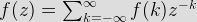
where F(k) is a discrete data
Z is a complex number
F (z) is Fourier transform of f (k).
 + q\tomes g (k)")
such that p and q are constants, now on taking the Laplace transform we have by property of linearity:
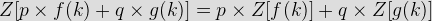
then we have by change of scale property
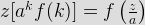
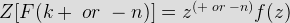
Now let us discuss some important z transforms and I will suggest readers to learn these transforms:
 =t")
Laplace transformation of this function is 1/s2 and the corresponding f(k) = kT. Now the z transformation of this function is
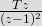
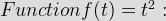 Laplace transformation of this function is 2/s3 and the corresponding f(k)=kT. Now the z transformation of this function is
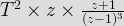
 =e^{-at} :") Laplace transformation of this function is 1/(s+a) and the corresponding f(k)= e(-akT). Now the z transformation of this function is
Laplace transformation of this function is 1/(s+a) and the corresponding f(k)= e(-akT). Now the z transformation of this function is
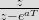
 =te^{-at}")
Laplace transformation of this function is 1/(s+a)2 and the corresponding f(k)= Te-akT. Now the z transformation of this function is
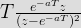
 =sin(at)")
Laplace transformation of this function is a/(s2+a2) and the corresponding f(k)= sin(akT). Now the z transformation of this function is
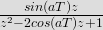
 = cos(at)")
Laplace transformation of this function is s/(s2+a2) and the corresponding f(k) = cos(akT). Now the z transformation of this function is
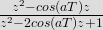
Now sometime there is a need to sample data again, which means converting discrete data into continuous form. We can convert digital data of control system into continuous form by hold circuits which are discussed below:
Figure related to zero order hold
In the block diagram we have given an input f(t) to the circuit, when we allow input signal to pass through this circuit it reconverts the input signal into continuous one .The output of the zero order hold circuit is shown below.
Now we are interested in finding out the transfer function of the zero order hold circuit. On writing the output equation we have
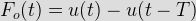
on taking the Laplace transform of the above equation we have
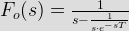
From the above equation we can calculate transfer function as
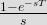
On substituting s=jω we can draw the bode plot for the zero order hold circuit. The electrical representation of the zero order hold circuit is shown below, which consists of a sampler connected in series with a resistor and this combination is connected with a parallel combination of resistor and capacitor.
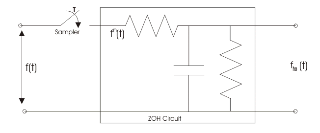

GAIN PLOT - frequency response curve of ZOH
PHASE PLOT - frequency response curve of ZOH
First Order Hold Circuit : The block diagram representation of the first order hold circuit is given below:

First Order Hold Circuit
In the block diagram we have given an input f(t) to the circuit, when we allow input signal to pass through this circuit it reconverts the input signal into continuous one. The output of the first order hold circuit is shown below: Now we are interested in finding out the transfer function of the first order hold circuit. On writing the output equation we have
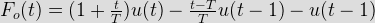
On taking the Laplace transform of the above equation we have
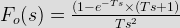
From the above equation we can calculate transfer function as (1-e-sT)/s. on substituting s=jω we can draw the bode plot for the zero order hold circuit. The bode plot for the first order hold circuit is shown below which consists of a magnitude plot and a phase angle plot.The magnitude plot starts with magnitude value 2π/ωs.
Gain Plot of First Order Hold Circuit
 by
by